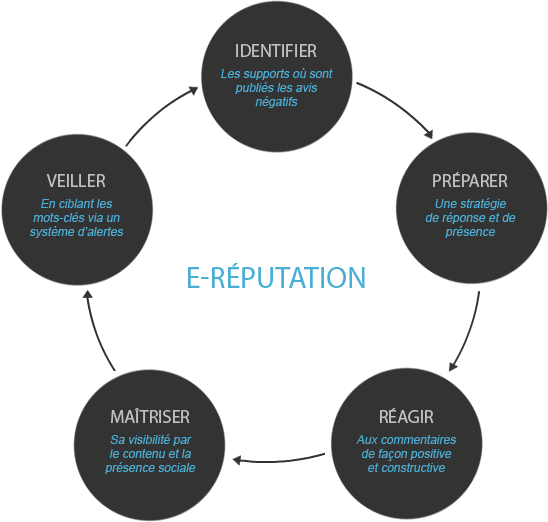

Aujourd’hui Internet occupe une place pré – pondérant dans nos vies. Cependant sans nous en rendre compte nous laissons énormément de traces sur Internet. C’est à ce moment-là que le Nettoyeur Web / Blanchisseur de profil entre en jeu. Son métier ? Analyse, poser un diagnostic et proposer une stratégie pour améliorer l’image et la réputation de l’entreprise ou du particulier qui a fait appel à lui.
Les qualités requises pour devenir Nettoyeur Web sont nombreuses mais communes à beaucoup de métier du Numérique. Il doit être à la pointe des nouvelles technologies, avoir une facilité avec l’utilisation des outils numériques, il doit être rigoureux. Il doit être un excellent communiquant et stratège, cependant, il doit savoir rester clairvoyant et dynamique.
Pour pouvoir accéder à se métier, il faut être au minimum diplômé d’un Bac+2. Néanmoins même si les diplômes sont tous issus du secteur Numérique, ils restent très variés. Par exemple, une personne issue d’un DUT Informatique pourra accéder à ce métier au même titre que quelqu’un diplômé d’un BTS Systèmes Numériques Option « Informatique et Réseaux ».
Le salaire d’un nettoyeur Web débutant perçoit 1800 euros bruts par mois tandis qu’un profil plus expérimenté peut gagner jusqu’à 2500 brut par mois.Cependant, ces chiffres s’appliquent à un salarié d’une entreprise, un expert intervenant dans des entreprises rémunéré à la mission doit avoir la possibilité de gagner plus d’argent.
Le quotidien du Nettoyeur Web consiste à effectuer une veille d’Internet, à gérer le contenu de ses clients et si la situation l’oblige, agir en remplaçant des commentaires ou informations susceptibles misent en avant qui ternissent l’image d’un ou plusieurs de ses clients. Au-delà des actions de « nettoyage » sur des contenus et informations spécifiques, le champ d'action de nettoyeurs peut s’étendre à des prestations plus globales de communication et de gestion d'E-réputation en utilisant une multitude de leviers : développement de présence sur internet, dialogue sur les réseaux sociaux, relation presse, gestion de crise, veille internet, création de contenus textuels, vidéos, photos…
Plusieurs méthodes existent pour faire disparaître du contenue d'internet :